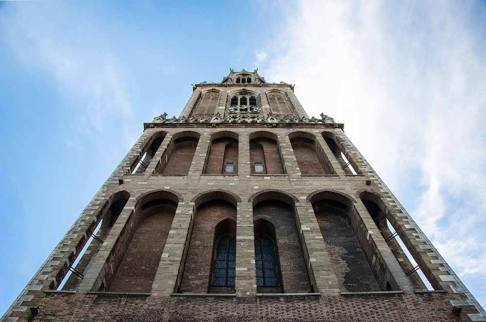
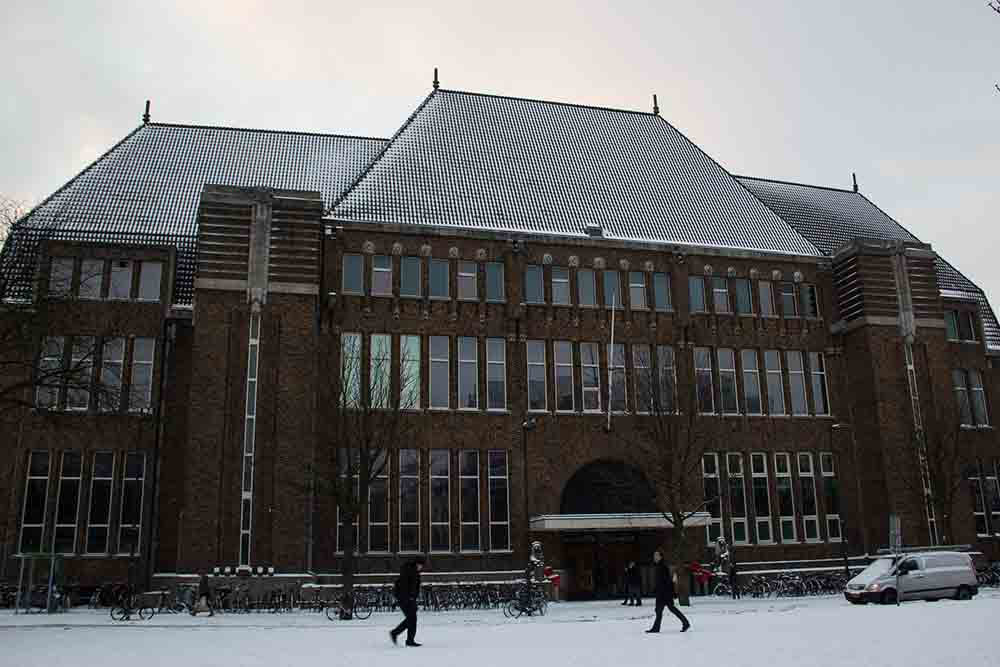

De Domtoren
 De Dom van Utrecht (Historisch Sint-Maartenskathedraal) is een markante gotische kerk in het midden van de Nederlandse stad Utrecht. De kerk werd vanaf 1254 gebouwd als voortzetting van de romaanse kathedraal van het rooms-katholieke bisdom Utrecht en was gewijd aan Sint-Maarten. Sinds 1580 is de kerk protestants. De 112,32 meter hoge Domtoren is de hoogste kerktoren van Nederland en het hoogste gebouw van Utrecht.
De Dom was tot de kerkelijke herindeling in 1559 de enige kathedraal in de Noordelijke Nederlanden, een gebied dat grofweg samenvalt met het huidige Nederland. Tot aan de ingebruikname van de Sint-Bavokathedraal in Haarlem in 1898 was de Dom de enige als kathedraal gebouwde kerk in Nederland.
Van het kerkgebouw resteren tegenwoordig het koor, het dwarsschip en de toren. Het schip, waarvan de bouw nooit was voltooid, stortte in 1674 in als gevolg van natuurgeweld. De Domtoren en het resterende deel van de Domkerk kwamen daardoor los van elkaar te staan. Bij het Domcomplex horen verder nog een kruisgang en de grote kapittelzaal (thans aula van de Universiteit Utrecht) waar in 1579 de Unie van Utrecht werd ondertekend. De kleine kapittelzaal van het Domcomplex, die tegen de westkant van de kruisgang was gebouwd, werd in de negentiende eeuw afgebroken.
Het oude postkantoor
 Het voormalige Hoofdpostkantoor is een ontwerp van de architect J. Crouwel jr. in de stijl van de Amsterdamse school. De bouw begon in 1919 en de oplevering vond plaats in 1924. De hal van het gebouw is indrukwekkend door de hoge paraboolvormige bogen. In de hal hangt een zestal beelden van arduin. Vijf van deze mensfiguren stellen de verschillende werelddelen voor en ze worden vergezeld van een bijbehorend dier, een zesde beeld gaat over de handel en welvaart. De beelden en ornamenten zijn van de hand van Hendrik van den Eijnde. Ook de twee leeuwen aan de buitenzijde voor de ingang zijn van zijn hand. Deze zijn later geplaatst en maakten in eerste instantie geen deel uit van het ontwerp, maar werden op verzoek van de bevolking van Utrecht gemaakt. De grote klok in de hal is gemaakt door De Porceleyne Fles. Het glas-in-loodwerk boven de ingang is van de hand van Richard Roland Holst en stelt voor de "Nederlandse Maagd in de tuin der provinciën".